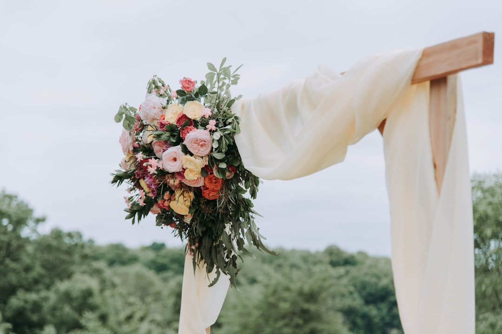

Come Digitalizzare le Partecipazioni e Gestire le Intolleranze con LOVE: La Svolta per Wedding Planner e Agenzie Eventi

Digitalizzare le Partecipazioni e Gestire le Intolleranze nel Wedding: La Soluzione Innovativa per Wedding Planner, Agenzie Eventi e Sposi
- Le partecipazioni cartacee creano costi elevati e inefficienze operative.
- Il caos nella gestione delle intolleranze è un rischio per la qualità del catering e la soddisfazione degli ospiti.
- LOVE Partecipazioni Digitali semplifica il processo con tecnologia 3D, intelligenza artificiale e RSVP avanzati.
Analisi Approfondita della Notizia e delle Implicazioni Operative
Nel settore wedding e organizzazione eventi, l'affidabilità della comunicazione con gli ospiti è cruciale per il successo di ogni cerimonia. Tuttavia, molte realtà continuano a utilizzare metodi tradizionali, in particolare le partecipazioni cartacee, che comportano costi elevati, tempi lunghi di produzione e consegna, oltre a una gestione complessa delle risposte, soprattutto per le esigenze alimentari specifiche degli invitati.
Le recenti analisi evidenziano una crescente necessità di soluzioni digitali che non solo riducano l’impatto ecologico ed economico, ma permettano anche di gestire in modo integrato e veloce le conferme di partecipazione e le specifiche intolleranze alimentari. L’emergere di nuove tecnologie come le partecipazioni digitali con apertura 3D e i sistemi intelligenti di RSVP rappresenta un cambiamento di paradigma nella pianificazione di matrimoni ed eventi.
Le Conseguenze e i Costi di Non Agire
Persistendo nell'utilizzo delle partecipazioni cartacee, wedding planner e agenzie eventi si trovano a dover affrontare spese significative per materiali, stampa, spedizione postale e gestione manuale delle risposte. Questi costi possono incidere pesantemente sul budget totale dell’evento, limitando la possibilità di allocare risorse ad altri aspetti qualitativi.
Inoltre, la gestione delle intolleranze tramite metodi tradizionali - fogli di carta, email dispersive o telefonate - spesso conduce a errori, ritardi nella raccolta delle informazioni e comunicazioni mal sincronizzate con il catering. Queste inefficienze mettono a rischio l’esperienza degli ospiti e possono causare disservizi importanti il giorno della cerimonia.
Un altro effetto collaterale è il tempo gravoso speso dal team organizzativo per coordinare tutte le fasi, sottraendo energia a compiti creativi e strategici. Senza un sistema integrato e digitale, il rischio di imprecisioni aumenta, incidendo negativamente sulla reputazione del professionista o dell’agenzia e causando potenziali lamentele da parte della clientela.
Come LOVE Partecipazioni Digitali Risolve il Problema
LOVE Partecipazioni Digitali si presenta come una soluzione SaaS innovativa, studiata specificamente per wedding planner, agenzie eventi e sposi che vogliono superare i limiti delle partecipazioni tradizionali. Grazie a una piattaforma intuitiva e ricca di funzionalità, trasforma completamente il processo di invio, raccolta e gestione delle partecipazioni e dei relativi RSVP.
Le partecipazioni digitali sono realizzate con un'apertura 3D ad alto impatto visivo, capace di coinvolgere emotivamente gli invitati in modo più efficace rispetto al formato cartaceo classico. La tecnologia Monogram Studio AI consente di personalizzare seguendo criteri estetici raffinati, allineandosi perfettamente con il mood luxury di un matrimonio o evento esclusivo.
Per quanto riguarda la gestione dell’RSVP, LOVE integra moduli intelligenti per raccogliere le preferenze e le intolleranze alimentari. I dati vengono organizzati automaticamente e possono essere esportati in file Excel, ottimizzando così il lavoro dello chef e della logistica catering. Inoltre, la spedizione tramite WhatsApp in modalità 1-Tap permette di raggiungere ogni invitato in modo immediato e comodo, massimizzando il tasso di risposta.
| Gestione Tradizionale | Con LOVE Partecipazioni Digitali |
|---|---|
| Costi elevati per stampa, carta e spedizione | Eliminazione costi cartacei, riduzione spese operative |
| Raccolta RSVP manuale e dispersiva, comunicazione lenta | Raccolta RSVP automatica e rapida via WhatsApp 1-Tap |
| Difficoltà nella gestione intolleranze alimentari | Gestione integrata intolleranze con export Excel per catering |
| Partecipazioni cartacee standard senza personalizzazione avanzata | Partecipazioni digitali d'autore con apertura 3D e Monogram Studio AI |
| Tempi lunghi di produzione e consegna | Invio istantaneo digitale, eliminando i tempi di spedizione |
💡 Ti è stato utile questo approfondimento?
Condividilo con un collega o un amico del settore Wedding Planner, Agenzie Eventi e Sposi a cui potrebbe interessare!
FAQ - Domande Frequenti per Wedding Planner e Agenzie Eventi
1. Come posso personalizzare le partecipazioni digitali con LOVE?
LOVE integra il Monogram Studio AI, uno strumento di intelligenza artificiale che permette di creare partecipazioni uniche, con design raffinati e apertura 3D, adattabili a qualsiasi stile o tema dell’evento.
2. È possibile esportare i dati delle intolleranze per agevolare il catering?
Sì, il sistema permette di raccogliere tutte le informazioni alimentari dagli invitati e di esportarle in file Excel, facilitando la pianificazione del catering e la preparazione di menù personalizzati.
3. Come avviene l’invio delle partecipazioni digitali agli invite?
Le partecipazioni vengono spedite tramite WhatsApp con un semplice sistema 1-Tap, assicurando rapidità nella comunicazione e alti tassi di apertura e risposta.
Inizia Subito
Licenza Sposi da €149 o Pannello Agency Hub B2B a €490 per 10 matrimoni.
Fonti Ufficiali e Risorse Esterne
Scopri l'Intelligenza Artificiale per la tua attività
Prova le soluzioni B2B di RM Studio e ottimizza le tue vendite.
Scopri LOVE Partecipazioni Digitali